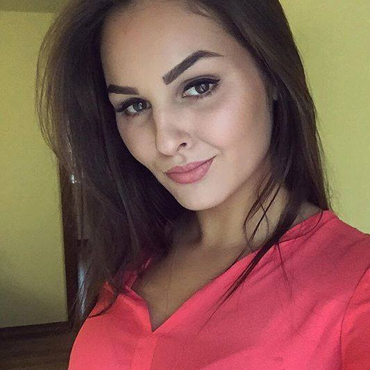
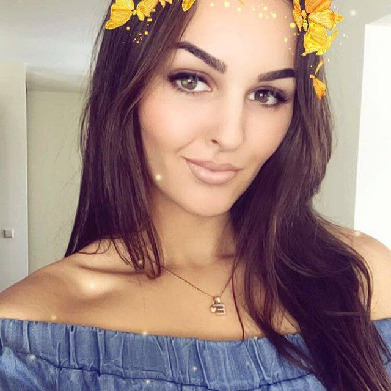

Following on the 2020 fashion trends – of online business meetings and WFH, 2021 brings some refreshing changes you’ll love to hear about. If past fashion trends were first gathered from the world’s runways and fashion magazines; nowadays, from social media, youth culture, streetwear styles, and celebrities showcasing what’s cool and fresh.Unfortunately, fashion trends of 2020 didn’t help much – in the sense of inspiring the general public – so this year is out of the normal path. So far, we’re still seeing a spring/summer season with models wearing masks on the catwalk and an audience watching via Zoom.But, in contrast to the apocalyptic settings the fashion industry is going through right now, the latest trends show artistry so fabulous that it lifts one’s mood from even the darkest depths of quarantine.Compared to the neutral looks of the 2020 fashion trends, this year is showcasing fresher and bolder designs, in part driven by a need to come back to life, after the gloomy global lockdown. The hottest fashion trends of SS21 enchant us with: Oversized blazers, sleek face masks, feathers that spark joy, monochrome chic add-ons, encouraging us to go bright and bold.To some extent, the current styles resemble the 90s fashion trends in the sense of mimicking the silhouettes and patterns of those seasons, with one big old styles are reinvented in relaxed, oversized, and loud colours, like nothing we’ve seen before, explained by experts as ‘our need to compensate the Covid-19 lockdown.
As fashion changes fast, keeping up with the latest fashion trends will help immensely, be that for a Covid-safe dinner date or just a walk in the park. To top it up, replicating the current fashion trends won’t cost you a dime.That’s because apart from crazy bold colours, all these styles rely on the same elements: straps, mid-section belts, vests, cosy maxi tops, pilgrim collars, micro-minis, strange new denim shapes, outrageous leggings, silly seems, and sweatshirts. Without further ado, these are the current fashion trends dominating 2021 that you should try!\
 